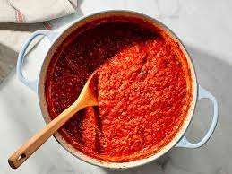

Back to menu
Simple Tomato Sauce

Description
Tomato sauce is a great way to get started with cooking! It can be as simple or complex as you like!
You may cook your sauce for 10 minutes, an hour, or even many hours.
Ingredients
- Extra Virgin Olive Oil
- Garlic
- Chili flakes
- Canned tomatoes
- Butter
- Salt
- Pepper
Steps
- Add the extra virgin olive oil to a pan, preheat at medium heat for a few minutes
- Mince or crush 3-4 cloves of garlic and add it to the pan. If it starts sizzling aggressively immediately, the pan is too hot
- Add chili flakes to taste. The more chili, the spicier the sauce (obviously)
- When the garlic is just about to turn golden brown, add the canned tomatoes
- If you're using whole canned tomatoes, you could crush them up with a wooden spoon if you want a smoother sauce
- Simmer the sauce for at least 10 minutes, up to hower long you want (if it starts to get too thick, you could add some water)
- When you feel ready to take it off, add some butter to deepen the flavour, then season to taste with salt and pepper
- If you've got some pasta boiling, you could finish it in the sauce!
- Enjoy! or don't, i'm not your boss